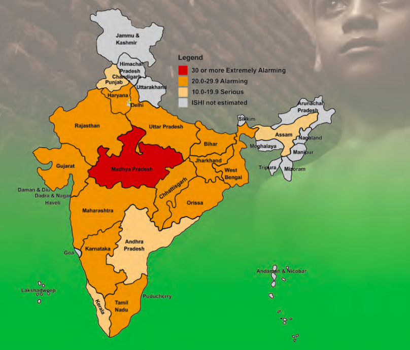

Does end in Poverty leads to end in Hunger? { Part - 2 }
This blog is in continuation of my earlier blog . Click Here
World Food Day is celebrated every year across the world on 16 October which is the founding data of Food and Agriculture Organisation.
Theme for 2018 was “Our Actions Are Our Future, Ending World Hunger by 2030 is Possible” which emoted me to write the earlier blog.
Current year theme is “Our Actions Are Our Future, Healthy Diets for A #ZeroHunger World” which gave me an impetus to continue where i left earlier.
Background:

Hunger Index is prepared on three variables:
The Proportion of Population that doesn’t consume adequate amount of calories
Proportion of Underweight children under the age of five.
The mortality rate among children under five years of age, expressed as the percentage of children born alive who die before they reach the age of five.
China’s GHI is 7 vis-a-vis India is 23.
In this article would like to discuss on the below pointers Are we inclined to buy more tastier than nutritious.? Taking full calorie diet is enough - Read the Link on How many calories do you need ? or Should we stop counting Calories and Count Nutrients Instead - Article
RDA for Calories is between 2000 to 2500 - Link for RDA for Calories and Link for RDA for Nutrients.
The biggest challenge these days for government, nutritionists and people is to create a balance between calories and nutrients. As a part of lifestyle most of us would have started consuming nutrition supplement as a part of our daily diet; which is ideally not recommended, as absorption of nutrients from real food would go in a declining phase. [ Some Links - Link1 ; Link2 ]
On the other side, the interesting fact is that there are more number of obese people in India than starving for hunger. Overweight and obesity kills more people than underweight and act as a predisposing factor for non-communicable diseases such as cardiovascular diseases, diabetes, musculoskeletal disorders, some cancers.
The top three reasons for obesity is
1) Engineering Junk Food
2) Excessive Food Addiction
3) Lack of Right Food Availability
Lack of Right Food Availability is the common reason for both being obese as well as being in malnutrition and in hidden hunger. We have to agree that stomach full is not equal to nutrient full. The reasons for choosing the tastier or available food can be future cost, savings, current money, craving, necessity and taste.
Our Grand Parents rarely see the locally grown pulses/vegetables being grown by farmers in large quantities. Most know that the reasons for the same has its root from green revolution.
The challenge for future Industries is also to make Nutrient Dense Foods at a cheaper/best price alternative which will be accessible to all.
To Conclude:
Every one has a role to play to achieve the #ZeroHunger state in this world.